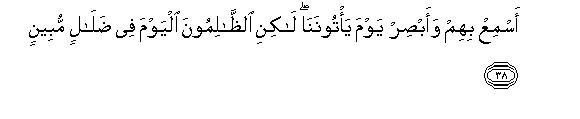
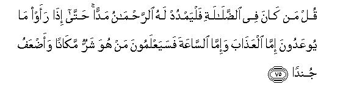

بسم الله الرحمن الرحيم
Sayyid Abul Ala Maududi - Tafhim al-Qur'an - The Meaning of the Qur'an
 19.
Surah Maryam (Mary)
19.
Surah Maryam (Mary)
It takes its name from v. 16.
It was revealed before the Migration to Habash. We learn from authentic Traditions that Hadrat Ja'afar recited vv. 1-40 of this Surah in the court of Negus when he called the migrants to his court.
We have already briefly referred to the conditions of that period in the introduction to Surah Al-Kahf. Here we shall give rather fuller details of the same conditions, which will be helpful in grasping the meaning of this Surah and the other Surahs of the period. When the chiefs of the Quraish felt that they had failed to suppress the Islamic movement by ridicule, sarcasm, and by holding out promises and threats and by making false accusations, they resorted to persecution, beating and economic pressure. They would catch hold of the new Muslims of their clans and persecute them, starve them and would even inflict physical torture on them in order to coerce them to give up Islam. The most pitiful victims of their persecution were the poor people and the slaves and the proteges of the Quraish. They were beaten black and blue, were imprisoned and kept thirsty and hungry and were dragged on the burning sands of Makkah. The people would get work from the professional laborers but would not pay them their wages. As an instance we give below the story of Hadrat Khabbab bin Arat, which is given in Bukhari and Muslim:
"I used to work as a blacksmith in Makkah. Once I did some work for As bin Wa'il. When I went to ask for my wages, he said, 'I will not pay your wages unless you disown Muhammad'."
In the same connection Hadrat Khabbab says, "One day the Holy Prophet was sitting in the shadow of the Ka'abah. I went to him and said, '0 Messenger of Allah, now persecution has gone to its extreme; why do you not pray to Allah (for relief)?' At this the Holy Prophet was greatly moved. He said, 'The believers before you were persecuted much more than you. Their bones were scraped with combs of iron and their heads were cut with saws, but still they did not give up their Faith. I assure you that Allah will fulfill this Mission, and there will come a period of such peace that one would travel from Sanna to Hadramaut, and he will have no fear from anyone, save Allah. But you people have already become impatient'." (Bukhari)
When the conditions became unbearable, the Holy Prophet, in the month of Rajab of the fifth year of Prophethood, gave advice to his Companions to this effect: "You may well migrate to Habash, for there is a king, who does not allow any kind of injustice to anyone, and there is good in his land. You should remain there till the time that Allah provides a remedy for your affliction".
Accordingly, at first, eleven men and four women left for Habash. The Quraish pursued them up to the coast but fortunately they got a timely boat for Habash at the sea-port of Shu'aibah, and they escaped attest. Then after a few months, other people migrated to Habash and their number rose to eighty-three men and eleven women of the Quraish and seven non-Quraish. After this, only forty persons were left with the Holy Prophet at Makkah.
There was a great hue and cry in Makkah after this Migration, for every family of the Quraish was adversely affected by this. There was hardly a family of the Quraish which did not lose a son, a son-in-law, a daughter, a brother or a sister. For instance, there were among the Migrants the near relatives of Abu Jahl, Abu Sufyan and other chief of the Quraish who were notorious for their persecution of the Muslims. As a result of this, some of them became even more bitter in their enmity of Islam, while there were others who were so moved by this that they embraced Islam. For instance, this Migration left a deep mark on Hadrat Umar. One of his relatives, Laila, daughter of Hathmah, says, "I was packing my luggage for Migration, while my husband, Amr bin Rabiy'ah, had gone out. In the meantime Umar came there and began to watch me, while I was engaged in preparation for the journey. Then he said, 'Are you also going to migrate?' I answered, 'Yes by God, you people have persecuted us much. But the wide earth of Allah is open for us. Now we are going to a place where Allah will grant us peace'. At this, I noticed such signs of emotion on the face of Umar as I had never seen before. He simply said, 'May God be with you' and went away."
After the migration, the Quraish held consultations, and decided to send Abdullah bin Abi Rabiy'ah, half brother of Abu Jahl, and Amr bin As to Habash with precious gifts so as to persuade Negus to send the migrants back to Makkah. Hadrat Umm Salmah (a wife of the Holy Prophet), who was among the migrants, has related this part of the story in detail. She says, "When these two clever statesmen of the Quraish reached Habash, they distributed the gifts among the courtiers of the King and persuaded them to recommend strongly to him to send the migrants back. Then they saw Negus himself and, presenting rich gifts to him, said, "Some headstrong brats of our city have come to your land and our chiefs have sent us to you with the request that you may kindly send them back. These brats have forsaken our faith and have not embraced your faith either, but have invented a new faith". As soon as they had finished their speech, all the courtiers recommended their case, saying, "We should send such people back to their city for their people know them better. It is not proper for us to keep them here." At this the King was annoyed and said, "I am not going to give them back without proper inquiry. As these people have put their trust in my country rather than in any other country and have come here to take shelter, I will not betray them. At first I will send for them and investigate into the allegations these people have made against them. Then I will make my final decision". Accordingly, the King sent for the Companions of the Holy Prophet and asked them to come to his court.
When the migrants received the message of the King, they assembled and held consultations as to what they should say to the King. At last they came to this unanimous decision: "We will present before the King the teachings of the Holy Prophet without adding anything to or withholding anything from them and leave it to him whether he lets us remain here or turns us out of his country". When they came to the court, the King put this problem abruptly before them:"I understand that you have given up the faith of your own people and have neither embraced my faith nor any other existing faith. I would like to know what your new faith is." At this, Jafar bin Abi Talib, on behalf of the migrants, made an extempore speech to this effect: "O King! We were sunk deep in ignorance and had become very corrupt; then Muhammad (Allah's peace be upon him) came to us as a Messenger of God, and did his best to reform us. But the Quraish began to persecute his followers, so we have come to your country in the hope that here we will be free from persecution". After his speech, the King said, "Please recite a piece of the Revelation which has been sent down by God to your Prophet". In response, Hadrat Jafar recited that portion of Surah Maryam which relates the story of Prophets John and Jesus (Allah's peace be upon them). The King listened to it and wept, so much so that his beard became wet with tears. When Hadrat Jafar finished the recital, he said:"Most surely this Revelation and the Message of Jesus have come from the same source. By God I will not give you up into the hands of these people".
Next day `Amr bin `As went to Negus and said, "Please send for them again and ask them concerning the creed they hold about Jesus, the son of Mary, for they say a horrible thing about him". The King again sent for the migrants, who had already learned about the scheme of Amr. They again sat together and held consultations in regard to the answer they should give to the King, if he asked about the belief they held about Prophet Jesus. Though this was a very critical situation and all of them were uneasy about it, they decided that they would say the same thing that Allah and His Messenger had taught them. Accordingly, when they went to the court, the King put them the question that had been suggested by Amr bin As. So Jafar bin Abi Talib stood up and answered without the least hesitation: "He was a Servant of Allah and His Messenger. He was a Spirit and a Word of Allah which had been sent to virgin Mary." At this the King picked up a straw from the ground and said, 'Bye God, Jesus was not worth this straw more than what you have said about him." After this the King returned the gifts sent by the Quraish, saying, "I do not take any bribe". Then he said to the migrants, "You are allowed to stay here in perfect peace."
Keeping in view this historical background, it becomes quite obvious that this Surah was sent down to serve the migrants as a "provision" for their journey to Habash, as if to say, "Though you are leaving your country as persecuted emigrants to a Christian country, you should not in the least hide anything from the teachings you have received. There- fore you should plainly say to the Christians that Prophet Jesus was not the son of God."
After relating the story of Prophets John and Jesus in vv. 1-40, the story of Prophet Abraham has been related (vv. 41-50) also for the benefit of the Migrants for he also had been forced like them to leave his country by the persecution of his father, his family and his country men. On the one hand, this meant to console the Emigrants that they were following the footsteps of Prophet Abraham and would attain the same good end as that Prophet did. On the other hand, it meant to warn the disbeliever, of Makkah that they should note it well that they were in the position of the cruel people who had persecuted their forefather and leader, Abraham, while the Muslim Emigrants were in the position of Prophet Abraham himself.
Then the mention of the other Prophets has been made in vv. 51-65 with a view to impress that Muhammad (Allah's peace be upon him) had brought the same way of Life that had been brought by the former Prophets but their followers had become corrupt and adopted wrong ways.
In the concluding passage (vv. 66-98), a strong criticism has been made of the evil ways of the disbelievers of Makkah, while the Believers have been given the good news that they would come out successful and become the beloved of the people, in spite of the worst efforts of the enemies of the Truth.

In the name of Allah, the Compassionate, the Merciful.
[1-3] Kaf Ha Ya Ain Sad. Here is an accounts1 of the mercy your Lord showed to His servant Zachariah2 when he invoked his Lord in an under tone.

[4-6] He prayed, “O my Lord! My very bones have become rotten, and my head is glistening with age. My Lord! I have never been disappointed in my prayer to Thee. I now fear (the consequences of) the evil ways of my kinsmen after me,3 and my wife is barren! I, therefore, pray Thee to bless me by Thy grace with a successor, who may inherit my heritage and that of the descendants of Jacob;4 and O Lord, make him a desirable person."
[7] (The answer was: ) “O Zachariah, We give you the good news of a son, who will be called Yahya ( John) . We have not created any other man of this name before.”5
[8] He said, “Lord, how can I beget a son when my wife is barren, and I have become impotent because of old age?”
[9] In answer, it was said, “So shall it be. Your Lord says, `This is easy for Me, even as I created you before this, when you were nothing at all.”6
[10] Zachariah said, “Lord, appoint a sign for me.” He said, “The sign for you is that you shall not talk to the people for three consecutive days.”
[11] After this, he came out of the sanctuary7 to his people, and made signs, asking them, “Glorfy God morning and evening.”8

[12] To John We said, “Observe the Divine Book with a firm resolve.”9
[13-15] We blessed him with "judgment"10 while he was yet a child, and bestowed on him tenderness of heart11 and purity from Ourself; and he was very pious and dutiful to his parents, and he was neither arrogant nor disobedient. Peace was on him on the day he was born and on the day he died, and peace shall be on him on the day he will be raised to life.12
[16-17] And, O Muhammad, relate in this Book the story of Mary:13 how she had retired in seclusion from her people to the eastern side and had hung down a screen to hide herself from them.14 There We sent to her Our Spirit ("an angel") and he appeared before her in the form of a perfect man.
[18] Mary cried out involuntarily, "I seek God's refuge from you, if you are a pious man."

[19] He replied, "I am a mere messenger from your Lord and have been sent to give you a pure son."
[20] Mary said, "How can I bear a son, when no man has touched me, and I am not an unchaste woman?"
[21] The angel replied, "So shall it be. Your Lord says, `This is an easy thing for Me to do, and We will do so in order to make that boy a Sign for the people15 and a blessing from Us, and this must happen."
[22-26] Accordingly, Mary conceived the child, and with it she went away to a distant place.16 Then the throes of childbirth urged her to take shelter under a date palm. There she began to cry, "Oh! would that I had died before this and sunk into oblivion.”17 At this the angel at the foot of her bed consoled her, saying, "Grieve not at all, for your Lord has set a spring under you; as for your food, shake the trunk of this tree and fresh, ripe dates will fall down for you; so eat and drink and refresh your eyes; and if you see a man, say to him, `As I have vowed to observe the fast (of silence) for the sake of the Merciful, I will not speak to anyone today.”18
[27-28] Then she brought the child to her people. They said, “O Mary! This is a heinous sin that you have committed. O sister of Aaron!19 your father was not a wicked man, nor was your mother an unchaste woman.”19a
[29] (In answer to this) Mary merely pointed towards the infant. The people said, “How shall we talk with him, who is but an infant in the cradle?”20

[30-33] Whereupon the child spoke out, "I am a servant of Allah: He has given me the Book and He has appointed me a Prophet, and He has made me blessed wherever I may be. He has enjoined upon me to offer Salat and give Zakat so long as I shall live. He has made me dutiful to my mother,20a and He has not made me oppressive and hard-hearted. Peace be upon me on the day I was born and peace shall be on me on the day I die and on the day I am raised to life.”21
[34-35] This is Jesus, the son of Mary, and this is the truth about him concerning which they are in doubt. It does not behoove God to beget a son for He is far above this. When He decrees a thing, He only says, "Be", and it does come into being.22

[36-40] (And Jesus had declared) "Allah is my Lord and your Lord, so worship Him; this is the Right Way."23 But in spite of this, the sects began to have differences among themselves.24 So those who adopted the ways of disbelief shall suffer a horrible woe, when they witness the Great Day. On that Day when they shall appear before Us, their ears and their eyes shall become very sharp, but today these transgressors (neither hear nor see the Truth and) have strayed into manifest deviation. O Muhammad, now that these people are not paying heed and are not believing, warn them of the horrors of the Day, when judgment shall be passed, and they will have nothing left for them but vain regret. Ultimately, We will inherit the Earth and all that is on it, and everyone shall be returned to Us.25

[41-45] And relate in this Book the story of Abraham;26 indeed he was a righteous man and a Prophet. (Remind them of the time,) when he said to his father, "Dear father! why do you worship those things, which do not hear nor see nor avail you anything? Dear father! I have received that knowledge which you have not got; so you should follow me and I will guide you on the Right Way. Dear father! do not serve Satan,27 for Satan is disobedient to the Merciful. Dear father! I am afraid lest you should incur the scourge of God and become Satan's companion.”

[46] The father replied, “O Abraham! Have you renounced my deities? If you do not desist from this, I will stone you to death: so get away from me for ever.”
[47-48] Abraham said, "I bid farewell to you; I will pray to my Lord to forgive you27a for He is very kind to me. I forsake all of you as well as those whom you invoke instead of Allah: I will invoke my Lord alone: I do hope that I shall not fail to gain my object' by invoking my Lord."
[49-50] Accordingly, when he left those people and their deities besides Allah, We granted to him descendants like Isaac and Jacob, and We made each of them a Prophet and We bestowed on them Our Mercy and We blessed them with true high renown.28
[51-53] And mention in this Book Moses: he was a chosen person,29 and he was a Messenger Prophet.30 We called him from the right side31 of Tur, and honored him with secret talk,32 and We made his brother Aaron a Prophet and gave to him (as an assistant).
[54-55] And make a mention in this Book of Ismail: he was true to his promise and was a Messenger Prophet. He enjoined his people to offer Salat and give Zakat, and his Lord was well pleased with him.
[56-57] And make a mention in this Book of Idris:33 he was a righteous man, and a Prophet; and We had raised him to a high position.34
[58] These are the Messengers on whom Allah bestowed His favors: they were from the descendants of Adam, and from the seed of those whom We carried in the Ark with Noah, and from the seed of Abraham and of Israel. They were among those people whom We guided aright and made Our chosen ones. They were so tender-hearted that when the Revelations of the Merciful were recited to them, they fell down prostrate in a state of weeping.
[59-61] Then there came after them those degenerate people, who lost their Salat35 and followed their lusts:36 so they shall soon encounter the consequences of their deviation. However; those, who repent and believe and do righteous deeds, will enter the Garden and they will not be wronged in the least. They will have those everlasting Gardens, which the Merciful has promised to His servants, while yet they have not seen them,37 and most surely that promise shall be fulfilled.
[62-63] There they will not hear any idle talk but only what shall be good and sensible,38 and they will get their provisions regularly in the morning and evening. That is the Garden which We will give as an inheritance to that one of Our servants, who leads a pious life.
[64-65] O Muhammad,39 we do not come down save at the bidding of your Lord; to Him belongs all that is before us and all that is behind us and all that lies between, and your Lord is never forgetful. He is the Lord, of the Heavens and the Lord of the Earth, and of all that is between them; so serve Him and be steadfast in His service.40 Do you know of any other being equal in rank to Him?41
[66-72] Man says, “What! After I am once dead, shall I again be brought to life?” Does not the man remember that We made him at first when he was nothing? By your Lord! We will muster them and the Satans along with them;42 then We will gather them round Hell and throw them down on their knees: then We will pick out from every band, each one of those who had been most rebellious against the Merciful;43 then We know very well which of them deserves most to be thrown into Hell. And there is none of you who will not be presented before the confines of Hell,44 for this is a settled ,decree, which your Lord will bring in force; then We will deliver those who were pious (in the world), and will leave the transgressors there on their knees.


[73-76] When Our plain Revelations are recited to them, the disbelievers say to the Believers, "Tell us, which of the two of our parties is in a better condition and has grander meetings"45 And how many a generation have We destroyed before them, who had more abundant riches than they and were grander in splendor! Say to them, "The Merciful gives respite to the one who falls into deviation up to the time when such people see that thing with which they had been threatened-the scourge of God or the Hour of Resurrection. Then they realize who was in worse plight and whose party was weaker. In contrast to them, Allah increases in guidance those who adopt the righteous way;46 and the abiding deeds of righteousness are better in the sight of your Lord in regard to their reward and their end.
[77-80] Then, have you seen the person who denies Our Revelations, and boasts, “I shall continue to be blessed with riches and children?”47 What! has the unseen been revealed to him? Or has he taken a pledge from the Merciful? By no means! We will take down whatever he boasts of,48 and will increase his chastisement all the more and We will inherit the riches and the helpers of which he boasts of, he shall appear before Us all alone.
[81-82] These people have set up other gods than Allah so that they may become their supporters.49 But they will have no supporter; all of them will not only disown their worship50 but also become their opponents.
[83-87] Do you not see that over those disbelievers We have appointed the Satans, who incite them urgently to oppose the Truth? Well, you need not become impatient for the coming of the scourge on them, for We are numbering their days.51 The day is coming near, when We will present the righteous people like honored guests before the Merciful, and drive the criminals to Hell like thirsty flocks. At that time no one shall have the ability to intercede except the one who may have received permission from the Merciful.52

[88-95] They say that the Merciful has adopted a son. What an absurd thing that you have invented! It is well nigh that the heavens might crack and the earth split asunder and the mountains crumble down at this hideous thing that they should ascribe a son to the Merciful! It does not behoove the Merciful to adopt a son. All those who are in the heavens and the earth, are going to be presented before Him as servants, for He has encircled them and kept a strict account of them; everyone shall be presented before Him individually on the Day of Resurrection.

[96-98] Most surely the time is coming near, when the Merciful will fill the hearts with love of those who have believed and are doing righteous works.53 So, O Muhammad, We have made this Qur'an easy, and sent it down in your tongue so that you should give good news to the pious and warn the obdurate people. We have destroyed many a people before them: do you find any trace of them or do you hear any whisper from them anywhere ?
1For comparison please see the story of Zachariah as given in vv. 34-57 of Al-i-Imran (III) and the E.N.'s thereof.
2In order to understand the position held by Hadrat Zachariah, a descendant ' of Prophet Aaron, one should be acquainted with the system of priesthood among the children of Israel.
After the conquest of Palestine, the whole land was divided among the 12 tribes of the descendants of Prophet Jacob as inheritance, and the 13th tribe (the Levites) were entrusted with religious services and duties. Even among the Levites, the house that was separated "to sanctify the most holy things .... to burn incense before the Lord, to minister unto him, and to bless in his name for ever" was the house of Prophet Aaron. The other Levites were not allowed to enter the Temple "Because their office was to wait on the sons of Aaron for the service of the house of the Lord, in the courts, and in the chambers, and in the purifying of all holy things, and the work of the service of the house of the God .... And to offer all burnt sacrifices unto the Lord in the Sabbaths, in the new moon, and on the set festivals." The descendants of Aaron were divided into 24 families, who came to serve the house of the Lord by turns. One of these families was of Abiah whose chief was Zachariah. Thus it was Zachariah's duty to go into the house on his family's turn and burn incense before the Lord. (For details, see I Chronicles, chapters 23, 24).
3That is, "I see none among my kinsmen, the family of Abiah, who is religiously and morally sound and capable of carrying on the work of the mission that has been entrusted to me."
4That is, "I do not pray for a successor to inherit me alone, but a successor who may inherit the good ways of the house of Jacob."
5In Luke the words are: "There is none of thy kindred that is called by this name." (1: 61)
6This dialogue is meant to impress that Allah is able to do whatever He wills and can make an impotent man and a barren woman give birth to a child, and likewise a virgin can be made to conceive a child.
7For the explanation of mihrab (sanctuary), see E.N. 36 of Al-i-Imran
8Below we reproduce the details of this event as given in Luke's Gospel so that the. reader may study and compare the Quranic with the Christian version. The references and additions within the brackets are ours:
"There was in the days of Herod, the king of Judaea, (see Bani Isra'il (XVII): E.N. 9) a certain priest named Zacharias, of the course of Abiah: and his wife was of the daughters of Aaron, and her name wag Elisabeth. And they were both righteous before God, walking in all the commandments and ordinances of the Lord blameless. And they had no child, because that Elisabeth was barren, and they both were now well stricken in years. And it came to pass, that while he executed the priest's office before God in the order of his course, according to the custom of the priest's office, his lot was to burn incense when he went into the temple of the Lord. And the whole multitude of the people were praying without at the time of incense. And there appeared unto him an angel of the Lord standing on the right side of the altar of incense. And when Zacharias saw him, he was troubled, and fear fell upon him. But the angel said unto him, Fear not, Zacharias: for thy prayer is heard; (there is no mention of Zacharias' prayer anywhere in the Bible) and thy wife Elisabeth shall bear thee a son, and thou shalt call his name John (that is, Yahya). And thou shalt have joy and gladness; and many shall rejoice at his birth. For he shall be great in the sight of the Lord (Sayyidan: a great Leader according to the Qur'an, III: 39), and shall drink neither wine nor strong drink (the Quranic version: Taqiyynr. pious and pure); and he shall be filled with the Holy Ghost, even from his mother's womb (the Qur'an says: `We blessed him with "judgment" while he was yet a child'). And many of the children of Israel shall he turn to the Lord their God. And he shall go before him in the spirit of the power of Elias, to turn the hearts of the fathers to the children, and the disobedient to the wisdom of the just; to make ready a people prepared for the Lord.
"And Zacharias said unto the angel, Whereby shall I know this for I am an old man, and my wife well stricken in years. And the angel answering said unto him, I am Gabriel, that stand in the presence of God; and am sent to speak unto thee, and to shew thee these glad tidings. And, behold, thou shalt be dumb, and not able to speak, until the day that these things shall be performed, because thou believest not my words, which shall be fulfilled in their season. (This is different from the Qur'an, which gives it as a Sign, whereas according to Luke, it was a punishment. Moreover, the Qur'an mentions it as the silence for `three consecutive days', but Luke says that Zacharias remained dumb till the birth of John). And the people .waited for Zacharias, and marveled that he tarried so long in the temple. And when he came out, he could not speak unto them: and they perceived that he had seen a vision in the temple: for he beckoned unto them, and remained speechless." (Luke 1: 5-22).
9The details regarding the birth of Prophet John, according to the Divine will, and his coming of age, have been left out. Here, in one sentence, the Mission of Prophethood entrusted to him on attaining maturity has been stated, which was "to observe and follow the Torah in letter and spirit, and to exhort the Israelites as well to do the same."
10The Arabic word hukm implies ability (1) to make decisions, (2) to form right opinions, (3) to interpret the Divine Law, (4) to solve problems, and (5) it also means authority from Allah to decide affairs.
11The Arabic word hanan is almost synonymous with `mother love'. In other words, Prophet John bore in his heart the same kind of intense love for Allah's servants as a mother has for her child.
12In order to have a fuller understanding of the Mission and the pure character of Prophet John, about which brief references have been made in this Surah and Surah Al-i-`Imran, it will be useful to study this story as given in different Books of the New Testament in the following order:
According to Luke, Prophet John was older than Prophet Jesus by six months and their mothers were cousins. He was appointed a Prophet at the age of 30 years, and according to the Gospel of John, he started his mission of inviting the people toward God in Jordan. He would say: "I am the voice of one crying in the wilderness. Make straight the way of the Lord." (John, I: 23)
According to Mark, "John did baptize in the wilderness, and preach the baptizm of repentance for the remission of sins. And there went out unto him all the land of Judaea, and they of Jerusalem, and were all baptized of him in the river of Jordan, confessing their sins." (Mark, I: 45). He thus came to be known as John the Baptist, and the Israelites held him as a prophet. (Mat. 21: 26). Prophet Jesus said about John: "Among them that are born of women there hath not risen a man greater than John the Baptist." (Mat. 11 : 11)
"John had his raiment of camel's hair, and a leather girdle about his loins; and his meat was locusts and wild honey." (Mat. 3: 4). He would say: "Repent ye: for the kingdom of heaven is at hand." (Mat. 3: 2). By this he meant that very soon Prophet Jesus was going to start his Mission of Prophethood. The same thing has been said about him in the Qur'an: ". . . he (John) will come to confirm a Command from Allah." (III: 39). For the same reason he has been called `a sign of or pointer to' Prophet Jesus.
He urged the people to observe the Fast and Prayers. (Mat. 9: 14, Luke, 5: 33, I1: 1). He would also tell them, ". . . He that hath two coats, let him -impart to him that hath none; and he that hath meat, let him do likewise." (Luke 3: 11). When the tax-collectors asked, "Master, what shall we do?" He said unto them, "Exact no more than that what is appointed you." (12-13), and when the soldiers sought his guidance, he said: "Do violence to no man, neither accuse any falsely; and be content with your wages." (Luke, 3: 14)'
When the corrupt scholars, Pharisees and Sadducees of the Israelites, came to be baptized by him, he rebuked them, saying: "O generation of vipers, who hath warned you to flee from the wrath to come?..think not to say within yourselves, We have Abraham to our father... now also the ax is laid unto the root of the trees: therefore every tree which bringeth not forth good fruit is hewn down, and cast into the fire." (Mat-3 :7-10)
The Jewish ruler of his time, Herod Antipas, in whose tetrarchy he was performing his Mission of inviting the people to the Truth, had been so deeply influenced by the Roman civilization that he was causing sin and evil to spread freely in the land. He had kept Herodias, his brother Philip's wife, unlawfully in his house; when Prophet John reproved him for this and raised his voice against other evils being committed by him, Herod got him arrested and sent to jail. However, he held him in high esteem for his piety and righteousness and even feared him on account of the great respect he enjoyed among the people. On the contrary, Herodias thought that the moral consciousness that Prophet John was producing among the people was directly aimed at women like herself and pulling them down in the public eye. Thus she nursed a grudge against him and would have him killed but could not. Soon an opportunity came her way. On the birthday banquet of Herod, her daughter danced and so delighted Herod and others that the king said to her, 'Ask of me whatsoever thou wilt, and I will give it thee.' The girl asked her mother what she should ask for. The mother said, `Ask for the head of John the Baptist.' The girl went back to the king and requested to have there and then the head of John the Baptist on a dish. Herod felt sorry to hear this, but could not reject the demand of the daughter of his beloved. He at once got Prophet John killed in the prison and presented his head on a dish to the dancing girl. (Mat. 14: 3-12, Mark, 6 :17-29, Luke, 3 :19-20).
13For comparison, see Al-i-Imran (III): 34-57, and An-Nina (IV) :156 and E.N.'s thereof.
14The Sanctuary where she had retired for devotion was an eastern chamber in the Temple, and as was customary she had hung a curtain to conceal herself from the people. It cannot be Nazareth as some people have wrongly taken it to be, because Nazareth is to the north of Jerusalem.
15The word "So shall it be" are very significant as has been stated in E.N. 6. The plain meaning is this: "A pure son shall be born to you just as your Lord has decreed, even though no man has touched you. " The same was the response to prophet Zachariah as stated in v. 9 above. And it is a sheer perversion to interpret it as: "So shall it be that a man will touch you and a son will be born to you." For, if it were to mean: "You will bear a son like all other women of the world," the subsequent two sentences: "Your Lord says, 'This is an easy thing for Me to do, and We will make that boy a Sign for the people'," would have become meaningless: Had this birth been an ordinary birth like the birth of every other child, there would have been no occasion to boast: "It is an easy thing, and that it will be made a Sign (miracle). This will be so because the child will speak in the cradle."
16When she conceived the child, she left the Sanctuary and went to a distant place (Bethlehem) in order to escape the bitter criticism of the people. They would have said, "Look at the virgin daughter of the pious house of Aaron! She has conceived a child and that, too, in the Sanctuary where she had retired for devotion!" Thus she temporarily succeeded in concealing the shame of the conception, but this event itself is a proof that prophet Jesus was born without a father. Had Mary been married and had a husband, she would not have left his or her parents house by herself and chosen a distant place for the purpose of delivery.
17The words "Would that..." show the extreme state of anxiety in which Mary found herself at the time. She did not utter these words on account of the labor pains but due to the pangs of sorrow as to how she would conceal the child from her people. The angel's words---"Grieve not at all"explain why she had spoken these desperate words. When a married girl is delivering her first baby, she might be dying with pains, but she is never so sorrowful and grieved.
18That is, "You need not say anything with regard to the child. It is now Our responsibility to answer the critics." This also indicates why Mary was so sad and grieved. Had she been married and given birth to her first baby like any other mother, there was no occasion to tell her to observe "a fast of silence", though it was a common custom among the Jews."
19"Sister of Aaron" may either mean that Mary had a brother of the name of Aaron, or it may mean that she belonged to the family of Prophet Aaron. The first meaning is supported by a tradition of the Holy Prophet and the second is plausible because that is supported by the Arabic idiom. But we are inclined to the second meaning, for the wording of the said tradition does not necessarily mean that she actually had a brother named Aaron. The tradition as related in Muslim, Nasa'i, Tirmizi, etc. says that when the Christians of Najran criticized the Quranic version of stating Mary as the sister of Aaron before Hadrat Mughirah bin Shu`bah, he was not able to satisfy them, because Prophet Aaron had passed away centuries earlier. When he presented the problem before the Holy Prophet, he replied, "Why didn't you say that the Israelites named their children after their Prophets and other pious men?" That is, "You could have answered their objection like this as well." (See also E.N. 32 of Al-i-Imran).
19aHow can the people who reject the miraculous birth of Prophet Jesus, explain why Mary's whole community had come out to curse and condemn her when she had appeared before them with the child?
20People who misinterpret the Qur'an translate this verse as: "How shall we talk with him, who is but a child of yesterday?".They attribute these words to the elderly people of the Jews, who said years later, when Jesus was a grown up boy, that they could not have any useful dialogue with a mere kid. But the person who keeps the whole context in view, will realize that this interpretation is absurd and has been given merely to avoid the miracle. As a matter of fact, the dialogue took place when the people were condemning Mary who being unmarried, had brought forth a child, and not when the child had grown up into manhood. V. 46 of AI-i-`Imran (III) and v. 110 of Al-Ma'idah (V) also support the view that Prophet Jesus had uttered these words as a baby in the cradle and not when grown up. In the first verse, the angel while giving the good news of a son to Mary, says: "He will speak to the people alike when in the cradle and when grown up"; in the other verse, Allah Himself says to Prophet Jesus: ".......you talked to the people even in the cradle as you talked when you were grown up."
20aThe words used are: "......dutiful to my mother", and not."dutiful to my parents" . This is another proof of the fact that Jesus had no father, and for the same reason he has been called `Jesus son of Mary' everywhere in the Qur'an.
21This speech in the cradle by Jesus was the `Sign' to which the angel referred in v. 21. As Allah intended to punish the children of Israel for their continuous wicked ways and evil deeds, He made a pious virgin girl of the family of Prophet Aaron, who had devoted herself to worship in the Temple under the patronage of Zachariah, bear a child and bring it before her people in order to concentrate the whole attention of the thousands of people assembled there on this extraordinary event. Then He made this new born child speak out even in the cradle that he had been appointed a Prophet. Though they had seen this wonderful Sign of Allah, they rejected the Prophethood of Jesus and brought him to the court for crucifixion, and thus incurred the wrath of Allah. (For further details, please see Al-i-Imran (III): E.N.'s 44 and 53, and An-Nina (IV): E.N.'s 212,213).
22In vv.1-35, it has been shown that the "Doctrine of the son of God" in regard to Prophet Jesus is absolutely wrong. For just as the miraculous birth of Prophet John did not make him the `son of God', so the miraculous birth of Prophet Jesus could not make him the son of God. For the births of both were the result of the same sort of miracle as they have been mentioned together in the same context in the Gospel of Luke. Therefore, it is mere distortion that the Christians should regard one as the servant of God and the other as the son of God.
23This declaration by Jesus has been cited to tell the Christians that Jesus also taught the same Doctrine of Tauhid as was taught by all other Prophets. And it was they who had invented the doctrine of shirk by making him the son of God. (Please also refer to Al-i-`Imran (III): E.N. 68, and Al-Ma'idah (V): E.N.'s 100, 101 and 130).
24That is, the sects of the Christians.
25Here the address which was meant to be delivered before King Negus and his courtiers comes to an end. In the Introduction to this Surah, we have already stated the historical background of this address. In order to form an idea of its great significance, it should be kept in mind that:
(a) this address was sent down at the time when the persecuted Muslims of Makkah were going to migrate to a Christian kingdom so that they may present before the Christians the true Islamic creed about Prophet Jesus. This shows that the Muslims under no circumstances should conceal the Truth;
(b) it shows a most wonderful moral courage of the Muslim Migrants to Habash that they recited this address in the royal court at the critical moment, when the courtiers who had been bribed were bent on handing them over to their enemies. They indeed were faced with the real threat that this frank Islamic criticism of the basic articles of the Christian Faith might turn the king against them and he might hand them over to the Quraish. But in spite of this, they presented the whole truth before the king without the least hesitation.
26From here the address is directed towards the people of Makkah, who had forced their own near and dear relatives to emigrate from their homes, just as Prophet Abraham had been exiled by his own father and brethren. The story of Prophet Abraham has been selected for this purpose because the Quraish professed to accept him as their religious leader and were proud of being his descendants.
27It should be noted that the literal translation of the Arabic text is: "Do not worship Satan", though Abraham's father and the other people did not worship Satan in the same sense as they worshiped idols. But as they followed and obeyed Satan, he accused them of worshiping Satan. Thus it is clear that if somebody follows and obeys , Satan, he virtually worships him. For Satan has never been a deity in the sense that people have made him an object of worship; nay, they have always been cursing him and following him at the same time. (For further details see Surah Al-Kahf (XVIII) E.N.'s 49-50).
27aFor explanation, please see Surah At-Taubah (IX): E.N. 112.
28This is to give comfort to the Migrants who had been forced to migrate from their homes. They were told that they would be honored and blessed with true renown just as Prophet Abraham had been blessed with true renown after his Migration.
29The word used is mukhlas, which means "purified". In other words, Allah had specially chosen Prophet Moses for the Mission of Prophethood.
30"Rasul" literally means `the one who is sent'; therefore it is used for an ambassador, envoy, messenger and representative. The Qur'an has used this title for angels, who are sent by Allah on a special mission, or for the human beings who brought His Message to mankind.
As regards the word "Nabi", it literally means the one who brings news, or the one who is high in rank, or the one who shows the way. This title is used for the Prophets in all the three senses. Thus Moses was a Messenger Prophet because he was a Messenger of high rank who gave news from Allah and showed the Right Way to the people.
The Qur'an does not necessarily differentiate between the use of the two titles, for sometimes it uses the title Rasul for one person at one place and the title Nabi for the same person at another place, and sometimes uses both the titles together for one and the same person. However, at some places each title has been used in a way as to show that there is some technical distinction between the two, though that has not been precisely marked out, except that every Rasul (Messenger) is a Nabi (Prophet) as well, but every Nabi may not be a Rasul, and that a Rasul has a special and more important mission to perform. This is supported by a Tradition of the Holy Prophet, which has been reported by Imam Ahmad from Abu Umamah and by Hakim from Hadrat Abu Zarr. When the Holy Prophet was asked how many "Messengers" and "Prophets" had been sent to the world, he said that the number of the Messengers was 313 or 315 and of the Prophets 124,000
31"The right side of Tur" means the eastern side of the mountain. As Prophet Moses, on his way from Midian to Egypt, was passing from the southern side of Mt. Tur, the eastern side would lie on his right and the western on his left if he faced the mountain, otherwise a mountain by itself cannot have a right or a left side.
32See E.N. 206 of Surah An-Nisa (IV)
33There is a difference of opinion as to who Prophet Idris was. Some commentators opine that he was a Prophet from among the Israelites, but the majority of them are inclined to the view that he was a Prophet before Noah. There is no authentic Tradition which may help determine his identity. The next verse (58), however, supports the view that he appeared before Prophet Noah. For of all the Prophets mentioned, he alone was the one who may be said to be "from the descendants of Adam."
The commentators are of the opinion that Idris was Enoch of the Old Testament, about whom it is said:
"And Enoch lived sixty and five years, and begat Methuselah: And Enoch walked with God after he begat Methuselah three hundred years.... and he was not; for God took him." (Gen. 5: 21-24)
In Talmud, there are greater details about Enoch, which are briefly as follows: "Before Noah when the descendants of Adam began to degenerate, the angel of God called to Enoch, who led a pious life away from the people, and said, 'O Enoch, arise, come out from seclusion, and go about among the people of the earth, guiding them to the path which they should follow and the ways which they should adopt.'
"Receiving this Divine Command, Enoch left his seclusion and gathered the people together and preached to them what he had been commanded, with the result that they listened to him and adopted the worship of God. Enoch ruled over mankind for 353 years: his rule was based on justice and truth, and consequently God favored mankind with all kinds of blessings." (H. Polano: The Talmud Selections, pp. 18-21)
34The plain meaning is that God had favored Idris with a high rank, but according to the Israelite traditions, God took up Idris (Enoch) to heavens. The Bible says: "...and he was not; for God took him", but the Talmud has a long story to tell, which ends with the words: "Enoch ascended to heaven in a whirlwind, with chariot and horses of fire."
35It appears that the degenerate people totally discarded Salat, or they had become neglectful and careless in its observance. This is the first evil that is committed by a degenerate people; for, after this there remains no connection whatever between them and God. Here it has been stated as a universal principle that the degeneration of the people of all the former Prophets started with the abandonment of Salat by them.
36This was the inevitable result of the loss of the connection with Allah. As they became more and more neglectful of their Salat, their lusts took complete hold of them and they fell to the lowest depths of moral depravity and began to follow their whims instead of the Divine Commands.
37That is, the promised Gardens which are yet unseen by His servants.
38The word used is salam, which means ' free from defect and fault' . It implies to mean that the greatest blessing that man will enjoy in Paradise will be that there he will hear no idle, vile or indecent talk; all the dwellers of Paradise will be neat and clean and pure people and every individual will be gentle and right-minded by nature; everybody will be secure against backbiting, slander and indecent songs and other ugly sounds. Whatever men will hear will be good, sensible and right.
This is indeed a great blessing which only that person can fully appreciate, who possesses a neat and fine taste, because only such a one can feel the misery of living among a dirty society, where his ears are never immune against lies, backbiting, slander, and mischievous and sensual talk.
39This paragraph is a parenthesis, which has been inserted at the end of one theme and before the commencement of the other. It is obvious from this that this Surah was sent down after a long delay. At that time the Holy Prophet and his Companions were passing through very hard times and were always expecting a Revelation to guide and comfort them. When Gabriel (peace be upon him) came with the angels with this Revelation, he at first delivered that part of the Message which was immediately needed. Then before proceeding further, he said these words by the leave of Allah as an explanation for the delay and to give them comfort from Allah and counsel of fortitude. This interpretation is not only borne out by the wording of the passage but also by some Traditions of the Holy Prophet, which have been cited by Ibn Jarir, Ibn Kathir, and the author of Ruh ulMa `ani in their commentary on this passage.
40That is, You should not only follow strictly the Way of service and face all the obstacles and afflictions with patience, but also should not get uneasy, if there is a delay in Revelation and help. You should rest content with His service as an obedient servant and perform persistently the duties and responsibilities entrusted to you as a Servant and Messenger.
41The word Sami literally means a name sake. Here it implies: "Allah is the only Deity: do you know of any other deity besides Him? If there is none, and you know that there is none, then you do not have any alternative but to serve Him and obey His Commands."
42The "Satans" are the leaders who persuade the wicked people to enjoy themselves in this worldly life, for there is no life in the Hereafter, where they shall have to present themselves before Allah and give an account of their deeds.
43The leader of every rebel band.
44According to some traditions, "to be presented before the confines of Hell" means `to enter Hell', but none of these traditions is authentic. Then this interpretation goes against the Qur'an and a great many authentic Traditions, which clearly state that the true Believers will never be cast into Hell. Lexically also, vurud (being presented unto) is not synonymous with dukhul (causing to enter). Therefore, the correct meaning would be that every human being will be presented before Hell, but then, as the next verse clarifies, the pious people will be rescued and the transgressors left therein on their knees.
45In response to the recital of clear Revelations, instead of accepting their Message, the unbelievers put such questions as these to the Believers to show that they were in the right: Who has grander houses to live in? Who has a higher standard of life? Who enjoys splendid meetings? If we are enjoying all these things while you are deprived of them, you may decide for yourselves whether we, who are enjoying happy worldly lives, are in the wrong, or you who are living miserable lives of indigence are in the right? (Also see Surah Al-Kahf (XVIII): E.N.'s 37-38).
46That is, "On every critical occasion, Allah guides them to make right decisions and helps them to adopt the right way, and protects them from evil and wrong things; thus they go on making more and more progress on the right way."
47The boastful person was not a particular man but a typical chief of the disbelievers of Makkah. Everyone of them claimed, "Howsoever you may call the an erroneous and un-righteous person and threaten me with the Divine scourge, the tact is that I am more prosperous than you today and shall continue being blessed with favors in future as well. lust have a look at my riches, at my grandeur and at my estate, and at my well-known sons, and then say where you see any signs of the wrath of God.
48That is, the boastful words of his shall also be included in the record of his crimes and he shall have to bear the consequences of his arrogant claim.
49The Arabic word 'Izzan (from 'Izat) implies a powerful and strong person whom nobody may dare do any harm; here it means a person's having such a strong supporter that no enemy or opponent of his may even cherish an evil intention against him.
50That is, they will say, "We never asked them to worship us nor were we aware that these foolish people were worshiping us."
51That is: "Endure their persecutions patiently a little more, for the time of their punishment is coming near, for We have given them respite for a fixed term, and let that term expire."
52This implies two things: (1) Intercession will be allowed only for the one who might have received permission for it from the Merciful, that is, the one who believed in Allah in the world and made himself deserving of His pardon. (2) Only that one will be able to plead intercession who might have got permission for this from the Merciful, and not those ones whom people themselves had made their intercessors without any reason.
53This is to comfort the righteous people who were being persecuted and insulted in the streets of Makkah. They are being assured that the time is coming near when the people will honor and love them because of their righteous deeds and good conduct. Hearts will be attracted towards them and the world will hold them in high esteem. And this will happen according to a universal principle. Those who are wicked, proud and haughty and try to rule over the people with falsehood and hypocrisy can never captivate the hearts of the people; on the other hand, those who invite the people to the right way with truth, honesty, sincerity and good conduct succeed in winning their hearts in the end, even though at first they might have to face the indifference and opposition of the dishonest people.